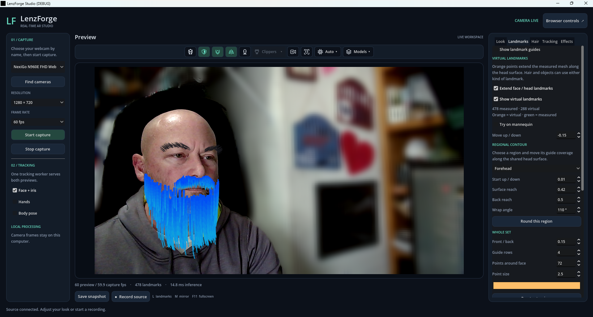
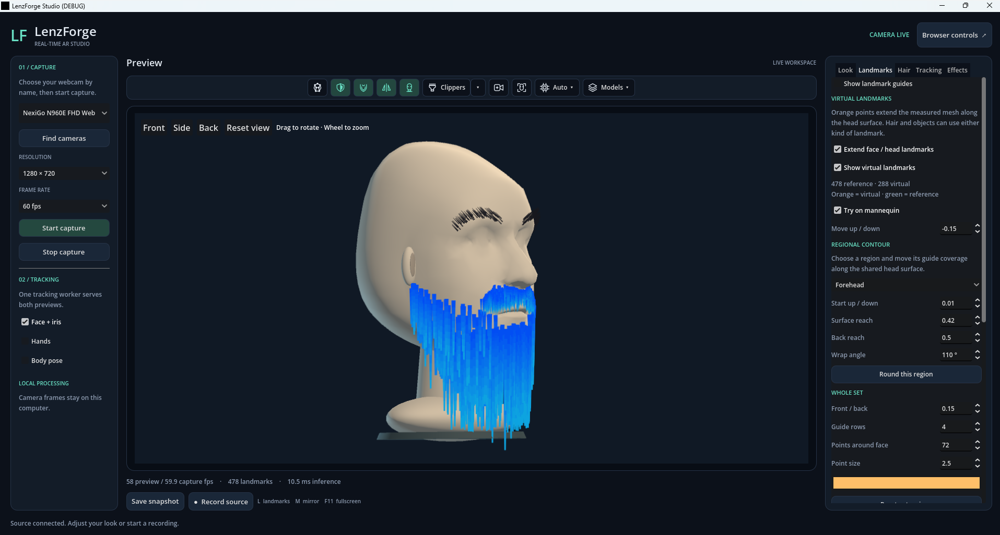
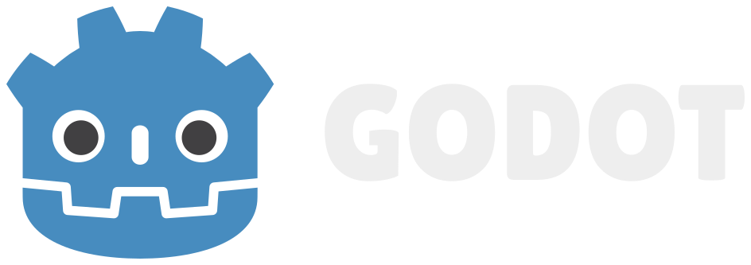

Inside the grooming workspace3D mannequin & strand physicsPROJECT / 01Built with

LenzForge Studio
Real-time AR.
A local Windows AR studio that turns a camera feed into an interactive workspace. Built on Godot, it combines live face tracking, physics-based beards and mustaches, 3D grooming, and visual effects.
- Shape facial hair on a rotatable mannequin, with native strand physics and interactive clippers.
- Apply background and facial effects, then share the composed feed through a Windows 11 virtual camera.
- Viewer
- Godot · GDScript · C++ GDExtension
- Tracking & capture
- Python · MediaPipe · OpenCV
- Local controls
- Flask · WebSockets · Browser UI